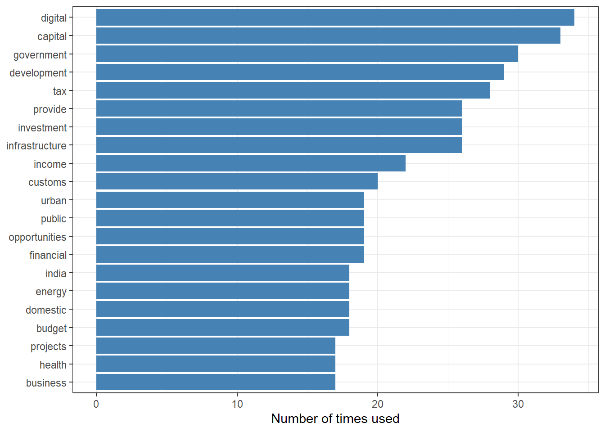
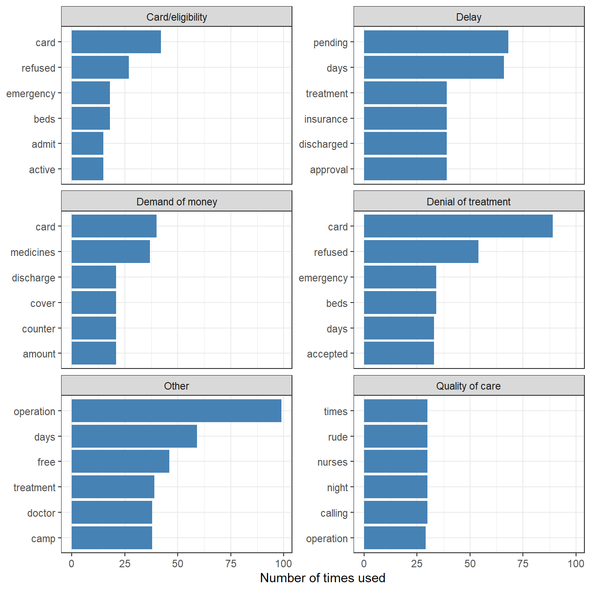
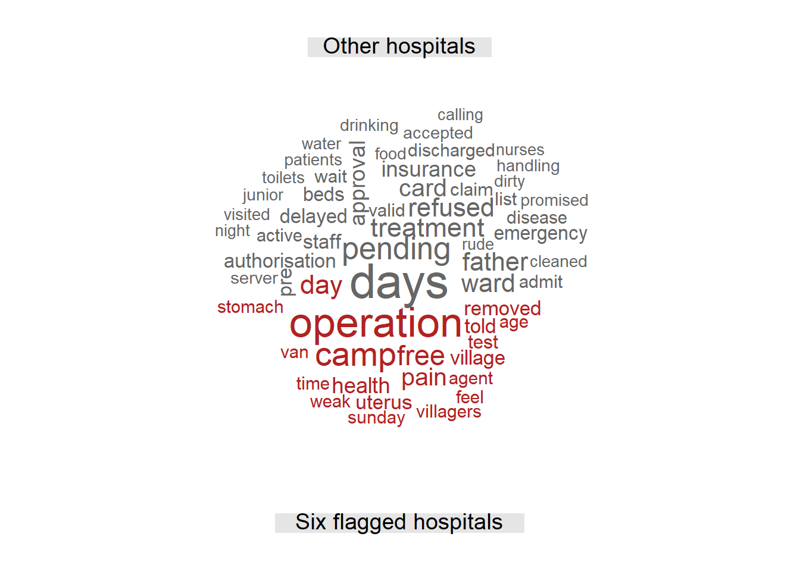
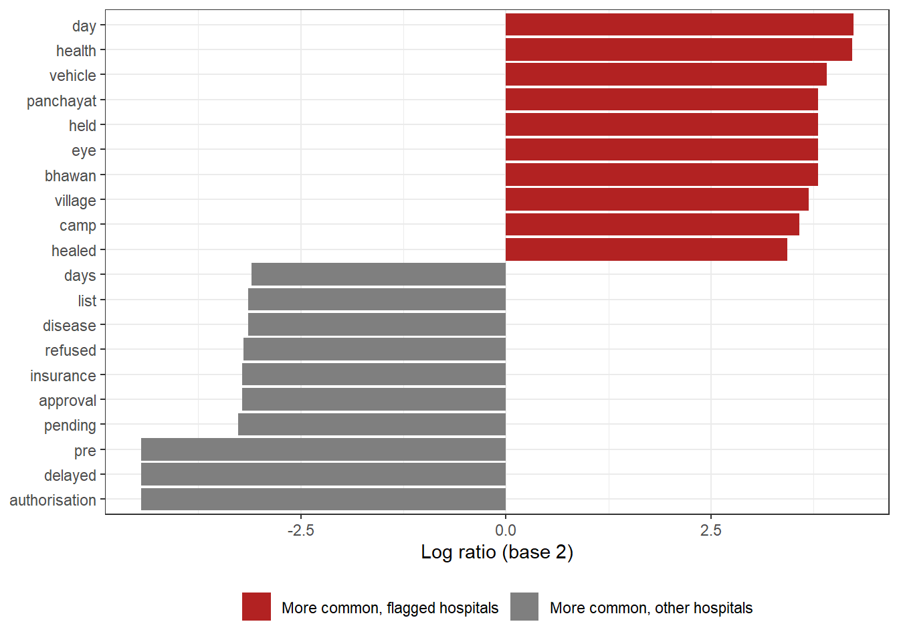
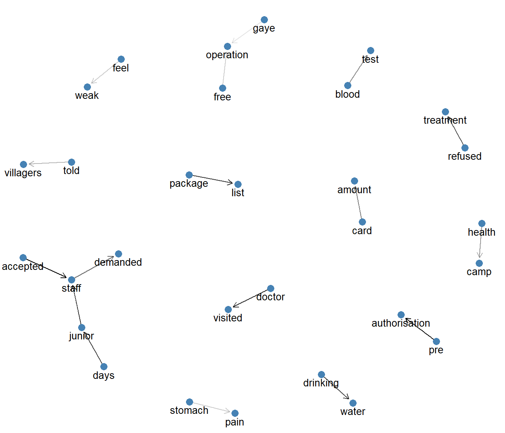

50 Visualising Text
Suppose an auditor of a State health insurance scheme has hundreds of grievances from patients. The audit report must tell its readers, in a page or two, what all this text is about. A table of word counts is accurate, but few readers will study it. A good picture of text can show, at a glance, what a long document or a large set of documents is about. It can also show how the complaints about one group of hospitals differ from those about all the others. Such a picture often makes the case for a closer look better than a page of words.
In the last two chapters, we learnt to clean text, count words and measure sentiment. The results were tables of words and numbers. In this chapter, we will turn such results into pictures. We will practise first on the Union Budget speech. Then we will turn to the grievances of the imaginary health scheme of Chapter 48, where six hospitals have already drawn our attention.
We will learn four kinds of charts.
- Frequency plots, bar charts of the most common words.
- Word clouds, where the size of each word shows how often it appears.
- Comparison charts and clouds, showing how the words of one group differ from another.
- Word networks, showing which words appear next to each other.
50.1 Prerequisites
50.2 A first picture, the Union Budget speech
As our first example, we will look at the Budget speech of the Finance Minister for 2022-231. The full text of the speech is available in the file budget.txt in the Data folder.
50.2.1 Step 1. Read the text
The file is a plain text file, with one paragraph on each line. readLines() reads such a file, giving one element for each line. We then put the lines into a data frame, one row per paragraph.
# A tibble: 4 × 2
paragraph text
<int> <chr>
1 1 "Hon’ble Speaker, "
2 2 "I present theBudget for the year 2022-23."
3 3 "Introduction"
4 4 "1.\tAt the outset, I want to take a moment to express my empathy f…The speech has 284 lines, from the opening “Hon’ble Speaker” to the last paragraph.
50.2.2 Step 2. Tokenise and count words
As in Chapter 48, we break the text into words with unnest_tokens(), and count them.
speech_words <- speech_df |>
unnest_tokens(word, text) |>
count(word, sort = TRUE)
speech_words |>
head(10)# A tibble: 10 × 2
word n
<chr> <int>
1 the 428
2 of 359
3 and 333
4 to 273
5 in 204
6 for 189
7 will 180
8 be 137
9 a 106
10 this 8250.2.3 Step 3. Remove stop words
The top words are stop words, as expected. We remove them with the standard list. We also remove numbers, which the speech has in plenty, like paragraph numbers, years and amounts.
speech_clean <- speech_words |>
anti_join(stop_words, by = "word") |>
filter(!str_detect(word, "^[0-9]"))We may also remove some words specific to this document. To know which ones, we can first skip this step and make the chart directly. After a first look, we identify the words that carry no meaning here, and remove them. Cent comes from “per cent”, crore and lakh from amounts, and sir from addressing the Speaker.
# A tibble: 10 × 2
word n
<chr> <int>
1 digital 34
2 capital 33
3 government 30
4 development 29
5 tax 28
6 infrastructure 26
7 investment 26
8 provide 26
9 income 22
10 customs 20The words we remove change the picture. So keep the list of custom stop words in the working papers, along with the reason for removing each word. A reviewer can then see that no meaningful word was dropped to make the chart look a certain way.
50.3 Frequency plots
The simplest and most accurate picture of word counts is a bar chart. We take the top words, and draw one bar for each (Figure 50.1).

fct_reorder(word, n) orders the words by their count, so that the longest bar is at the top. Without it, the words would appear in alphabetical order. We learnt about ordering factors in Chapter 24.
The chart tells us at once what the speech emphasised. Digital, capital, government, development, tax, infrastructure, investment, and so on. Each bar can be read and compared exactly.
50.4 Word clouds
A word cloud draws the words themselves, with more frequent words in larger letters. It is less precise than a bar chart, but it is striking, and it can show many more words in the same space. This makes it popular in presentations.
The function wordcloud() from the package wordcloud draws it. Its main arguments are these.
-
wordsandfreqare the words and their counts. -
max.wordsis the maximum number of words to draw. -
random.order = FALSEputs the most frequent words in the centre. -
colorsgives the colours to use. We take a palette fromRColorBrewer, which we discussed in Appendix D. -
scalegives the range of letter sizes, from the largest to the smallest.
The output of the following code can be seen in Figure 50.2.
pal <- RColorBrewer::brewer.pal(8, "Dark2")
set.seed(123)
speech_clean |>
with(wordcloud(words = word,
freq = n,
random.order = FALSE,
max.words = 40,
colors = pal,
scale = c(2.5, 0.5)))The positions of words in a cloud are partly random. We used set.seed() so that the cloud looks the same every time the code is run.
Word clouds look good, but they read poorly. The human eye is not good at comparing the sizes of words. A long word looks more important than a short one of the same count. And the colours usually carry no meaning. So use word clouds to give a quick impression, especially in presentations. For analysis, and for any comparison that matters, use a bar chart.
50.5 Comparing groups of documents
In audit, we usually want to compare. What do complaints about one set of hospitals say, compared with complaints about others? Let us return to the grievances of the imaginary Sarvajan Swasthya Yojana from Chapter 48.
grievances <- read_csv("Data/ssy_grievances.csv", show_col_types = FALSE)
griev_stop_words <- tibble(word = c("sir", "ji", "madam", "respected", "dear", "officer",
"kindly", "please", "help", "action", "matter",
"urgently", "look", "contact", "mobile", "poor",
"people", "hospital", "hospitl", "scheme", "ssy",
"patient", "rs", "rupees", "ke", "le", "kar"))
griev_words <- grievances |>
unnest_tokens(word, text) |>
anti_join(stop_words, by = "word") |>
anti_join(griev_stop_words, by = "word") |>
filter(!str_detect(word, "[0-9]"))These are the same cleaning steps as in Chapter 48.
50.5.1 Top words in each category, side by side
To compare the top words of several groups, we draw one small bar chart for each group, side by side, with facet_wrap(). There is one problem. Each group has its own order of words. fct_reorder() can only give one order for the whole chart. tidytext solves this with two helper functions. reorder_within() orders the words separately within each group, and scale_y_reordered() cleans up the labels (Figure 50.3).
griev_words |>
count(category, word) |>
slice_max(n, n = 6, by = category, with_ties = FALSE) |>
ggplot(aes(n, reorder_within(word, n, category))) +
geom_col(fill = "steelblue") +
scale_y_reordered() +
facet_wrap(~category, scales = "free_y", ncol = 2) +
labs(x = "Number of times used", y = NULL) +
theme_bw()
Each panel shows the top words of one category. The panel for Other stands out. Its top word is operation, by a wide margin, followed by words like free and camp. These do not belong to any of the fixed categories. This is the same finding as in Chapter 48, now visible in one picture.
50.6 Audit use case, grievances about six flagged hospitals
In Chapter 44, six hospitals stood out for their unusual claims. In Chapter 48 and Chapter 49, their grievances also looked different. Let us now make a picture that shows, to a reader of the audit report, how the grievances about these six hospitals differ from those about all other hospitals.
50.6.1 A comparison cloud
A comparison cloud shows two or more groups in one cloud. Each word is placed in the part of the cloud belonging to the group in which it is relatively more frequent. Let us compare grievances about the six flagged hospitals with grievances about all other hospitals.
The function comparison.cloud() needs the counts in a matrix, with words as rows and groups as columns. We prepare it with pivot_wider(), and convert it with column_to_rownames() and as.matrix().
camp_hospitals <- c("H063", "H066", "H070", "H071", "H098", "H116") # flagged in the k-means chapter
compare_matrix <- griev_words |>
mutate(group = if_else(hospital_id %in% camp_hospitals,
"Six flagged hospitals", "Other hospitals")) |>
count(word, group) |>
pivot_wider(names_from = group, values_from = n, values_fill = 0) |>
column_to_rownames("word") |>
as.matrix()
head(compare_matrix) Other hospitals Six flagged hospitals
accepted 41 4
active 41 2
admit 41 2
admitted 2 10
age 3 17
agent 5 18Now we draw it (Figure 50.4).
set.seed(123)
comparison.cloud(compare_matrix,
max.words = 60,
colors = c("grey40", "firebrick"),
title.size = 1.2,
scale = c(2.5, 0.5))
The two halves tell two different stories. Grievances about other hospitals are mostly about cards, refusals, pending approvals and the ward. Grievances about the six flagged hospitals are about operations, camps, agents, villages, pain and the uterus being removed. For an audit presentation, this one picture can make the case for a closer look at those six hospitals.
50.6.2 A more precise comparison, the log ratio
A comparison cloud gives an impression, but it does not tell us how much more common a word is in one group. For an audit report, a bar chart of the log ratio is better. For each word, we take its share among all the words of each group, and compare the two shares.
\[ \text{log ratio} = \log_2 \left( \frac{\text{share of the word in flagged hospitals}}{\text{share of the word in other hospitals}} \right) \tag{50.1}\]
A log ratio of 1 means the word is twice as common, relatively, in grievances about the flagged hospitals. A log ratio of -1 means it is twice as common about the other hospitals. Zero means no difference. We add 1 to every count before dividing, so that a word missing from one group does not give a division by zero. We also keep only words used at least 10 times, since ratios of very small counts are unreliable.
log_ratios <- as_tibble(compare_matrix, rownames = "word") |>
rename(flagged = `Six flagged hospitals`, other = `Other hospitals`) |>
filter(flagged + other >= 10) |>
mutate(log_ratio = log2(((flagged + 1) / sum(flagged + 1)) /
((other + 1) / sum(other + 1))))
# Top 10 words on each side
bind_rows(slice_max(log_ratios, log_ratio, n = 10, with_ties = FALSE),
slice_min(log_ratios, log_ratio, n = 10, with_ties = FALSE)) |>
mutate(group = if_else(log_ratio > 0, "More common, flagged hospitals",
"More common, other hospitals")) |>
ggplot(aes(log_ratio, fct_reorder(word, log_ratio), fill = group)) +
geom_col() +
scale_fill_manual(values = c("firebrick", "grey50")) +
labs(x = "Log ratio (base 2)", y = NULL, fill = NULL) +
theme_bw() +
theme(legend.position = "bottom")
Each bar can be read exactly. For example, camp has a log ratio of 3.6, so it is about 12 times as common, relatively, in grievances about the flagged hospitals. The other words at the top, like vehicle, panchayat, bhawan, village and healed, describe the same story of camps held in villages and wounds that have not healed. At the other end, pre, authorisation, delayed, pending and approval are typical of the routine complaints about other hospitals.
50.6.3 Back to the grievances
A picture points to a theme. The auditor still needs the grievances behind it. Let us pick out the grievances about the six hospitals that mention a camp, a vehicle or a village, and count them by hospital.
camp_grievances <- grievances |>
filter(hospital_id %in% camp_hospitals,
str_detect(str_to_lower(text), "camp|vehicle|village"))
camp_grievances |>
count(hospital_id, sort = TRUE)# A tibble: 6 × 2
hospital_id n
<chr> <int>
1 H070 15
2 H063 11
3 H066 11
4 H071 11
5 H098 10
6 H116 9There are 67 such grievances. They come from all six hospitals, so the pattern is not the work of one hospital alone. Let us read a few of them.
camp_grievances |>
slice_head(n = 3) |>
pull(text)[1] "To the officer, Agent of the hospitl told villagers that free operation is available, took us in their van on Sunday. Please look into the matter urgently."
[2] "Camp ke baad hospital le gaye, operation kar diya. Nobody explained anything to us."
[3] "sir ji, agent of the hospital told villagers that free operation is available, took us in their van on sunday. we are poor people, please help." The words in the pictures are now backed by the patients’ own accounts.
Put the chart in the report, but keep the list of grievances behind it in the working papers. A reader may question a picture. A list of dated grievances, each with an ID, is evidence.
The next steps for the auditor follow from here.
- Match these grievances with the claims of the same hospitals, by patient and by date of admission.
- Check whether the patients came from the same villages, on the same days, as a camp would suggest.
- Ask the scheme authority what action it took on each grievance.
- Where needed, plan a survey of beneficiaries in those villages.
50.7 Word networks
Bar charts and clouds show single words. To see how words are connected, we can draw a network of bigrams. Each word is a point (a node), and an arrow (an edge) joins two words that appear one after the other. We will study networks in detail in Chapter 51, with the package igraph. Here we use igraph only to build the network. We draw it with ggraph, which draws networks in the style of ggplot2.
First, we count bigrams, after removing stop words from both words, as in Chapter 48. We keep only the more frequent ones, so that the picture is readable.
all_stops <- c(stop_words$word, griev_stop_words$word)
bigram_counts <- grievances |>
unnest_tokens(bigram, text, token = "ngrams", n = 2) |>
separate_wider_delim(bigram, delim = " ", names = c("word1", "word2")) |>
filter(!word1 %in% all_stops, !word2 %in% all_stops,
!str_detect(word1, "[0-9]"), !str_detect(word2, "[0-9]")) |>
count(word1, word2, sort = TRUE) |>
filter(n >= 15)
bigram_counts# A tibble: 17 × 3
word1 word2 n
<chr> <chr> <int>
1 pre authorisation 46
2 accepted staff 45
3 days junior 40
4 doctor visited 40
5 junior staff 40
6 package list 38
7 refused treatment 38
8 drinking water 37
9 staff demanded 33
10 card amount 31
11 blood test 28
12 health camp 27
13 told villagers 23
14 feel weak 20
15 free operation 20
16 stomach pain 20
17 gaye operation 17graph_from_data_frame() from igraph turns this table into a network. The first two columns become the two ends of each edge, and n becomes an edge attribute.
bigram_graph <- graph_from_data_frame(bigram_counts)
set.seed(2024)
ggraph(bigram_graph, layout = "fr") +
geom_edge_link(aes(edge_alpha = n),
arrow = grid::arrow(length = unit(2, "mm")),
end_cap = circle(2, "mm"), show.legend = FALSE) +
geom_node_point(colour = "steelblue", size = 3) +
geom_node_text(aes(label = name), vjust = 1.5, size = 3.5) +
theme_void()
In Figure 50.6, the arrows follow the order of words, and darker arrows mean more frequent pairs. layout = "fr" places strongly connected words near each other. We can now read short phrases straight from the picture, like health camp, told villagers, free operation and staff demanded.
50.7.1 An interactive word network
For exploring, an interactive network is often more useful than a static one. We can drag the words apart, zoom in, and click a word to highlight the words joined to it. The package visNetwork, which we will use again in Chapter 51 and Chapter 52, draws one directly from the igraph object (Figure 50.7).
library(visNetwork)
bigram_vis <- toVisNetworkData(bigram_graph)
bigram_vis$edges <- bigram_vis$edges |>
mutate(value = n, title = paste0(from, " ", to, ", ", n, " times"))
visNetwork(bigram_vis$nodes, bigram_vis$edges, width = "100%", height = "450px") |>
visEdges(arrows = "to", color = list(color = "grey")) |>
visNodes(color = "steelblue", font = list(size = 18)) |>
visIgraphLayout(layout = "layout_with_fr", randomSeed = 2024) |>
visOptions(highlightNearest = TRUE)Look at the pair accepted → staff. It comes from sentences like “card is not accepted, staff says server is down”. unnest_tokens() removes the comma before forming pairs, so the last word of one phrase gets joined to the first word of the next. Such pairs are artefacts, not real phrases. If they matter, split the text into sentences or phrases first, for example with unnest_tokens(token = "sentences"), and then form bigrams within each.
50.8 Choosing the right chart
| Purpose | Suggested chart |
|---|---|
| Exact comparison of word counts | Bar chart |
| Quick impression for a presentation | Word cloud |
| Comparing top words across several groups | Faceted bar chart with reorder_within()
|
| Showing what sets two groups apart | Comparison cloud, or better, a bar chart of log ratios |
| Showing phrases and connections | Bigram network, interactive with visNetwork for exploring |
50.9 A suggested workflow
- Clean and count the text, as in Chapter 48.
- Start with a bar chart of the top words. It is the most honest picture.
- Refine the stop words after the first look, and redraw.
- Compare groups with faceted bar charts or comparison clouds.
- Use bigram networks when phrases matter more than single words.
- Use word clouds for presentation, and set a seed so they can be reproduced.
- Check every striking picture against the documents behind it. Pull out the records behind each theme, and keep them in the working papers.
A picture of text is a summary, and every summary leaves things out. The most frequent words are not always the most important ones. A single grievance about a death in a hospital matters more than a hundred about dirty toilets. Use the pictures to see the broad picture, and the documents to see what really happened.
50.10 Summary of functions used
| Function | Package | What it does |
|---|---|---|
readLines() |
base R | Reads a text file, one element per line |
unnest_tokens() |
tidytext | Splits text into words or bigrams |
fct_reorder() |
forcats | Orders words by count in a bar chart |
wordcloud() |
wordcloud | Draws a word cloud |
reorder_within(), scale_y_reordered()
|
tidytext | Orders words separately within each facet |
comparison.cloud() |
wordcloud | Word cloud comparing two or more groups |
column_to_rownames() |
tibble | Moves a column into row names, before making a matrix |
graph_from_data_frame() |
igraph | Builds a network from a table of word pairs |
ggraph(), geom_edge_link(), geom_node_text()
|
ggraph | Draws the network |
toVisNetworkData(), visNetwork()
|
visNetwork | Draws an interactive network |
str_detect(), pull()
|
stringr, dplyr | Pick out the grievances behind a picture, and read their text |
The source is the Indian Budget Portal.↩︎